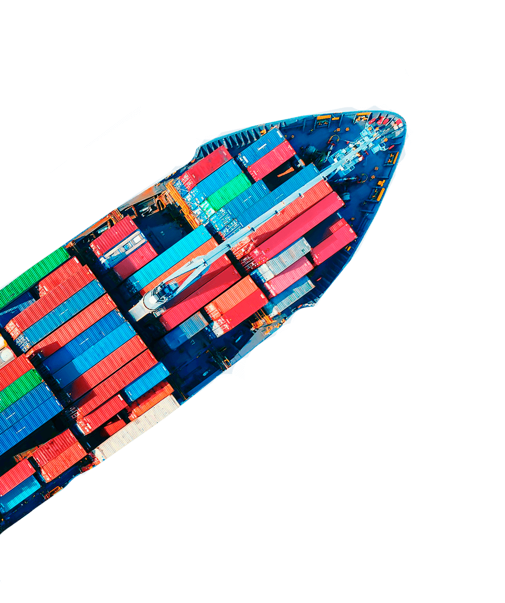
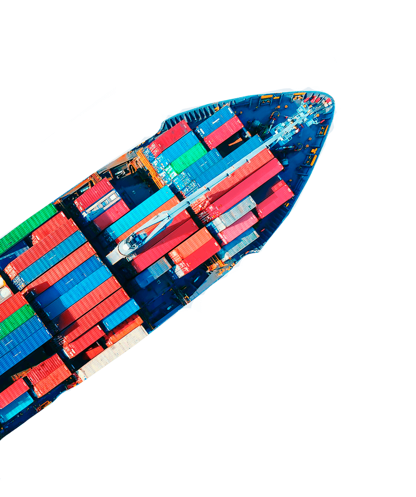

Registro especial de bebidas (selos)
Fundada em 2002 e especializada na gestão de processos relacionados ao comércio internacional, a Saygo conta com profissionais extremamente qualificados para assessorar empresas que atuam ou desejam atuar no exterior.
Entre os serviços oferecidos estão: habilitação no Siscomex RADAR, controle de intervenientes aduaneiros e credenciamentos para importação, e a gestão do processo de importação.
Isso sem contar um dos principais serviços, que é a obtenção do registro especial de bebidas (selos) a que estão obrigados os importadores, produtores, engarrafadores e estabelecimentos comerciais atacadistas de bebidas alcoólicas.
Para este serviço de registros, é extremamente importante confiar seus processos a empresas especializadas na realização das atividades, garantindo que todo o processo seja feito de forma profissional.
Além disso, a Saygo busca ao máximo realizar o registro especial de bebidas (selos) da forma mais ágil e otimizada possível, mantendo o compromisso e a privacidade dos processos, e baseando-se na ética, eficiência e experiência dos clientes.
 

O que é o
“registro de bebidas”?
O registro de bebidas serve para produtores, engarrafadores, cooperativas de produtores, estabelecimentos comerciais atacadistas e importadores de bebidas alcoólicas. Todos esses estão obrigados à inscrição no registro especial, sendo proibida a realização de atividades comerciais sem essa licença.
Cada estabelecimento deve ter um registro especial de bebidas (selos), de acordo com o tipo de atividade que realiza. Um mesmo estabelecimento pode ter mais de um tipo de registro.
Todos os pontos podem ser consultados na Instrução Normativa RFB nº 1432, de 26 de dezembro de 2013. Vale ressaltar que, caso a empresa não comprove sua regularidade fiscal, o seu registro poderá ser cassado pela Autoridade Fiscal.
preciso de uma assessoria de comexQuem pode utilizar este serviço?
O registro especial de bebidas (selos) é recomendado tanto para a empresa produtora quanto para o estabelecimento industrial que fabrica ou acondiciona bebidas alcoólicas para venda a granel.
Empresas engarrafadoras, atacadistas e estabelecimentos que importam bebidas alcoólicas com finalidade comercial também devem obter este registro. Os requisitos básicos para a obtenção deste registro são:
- Estar legalmente constituída para o exercício da atividade;
- Situação cadastral regular e atualizada;
- Contar com instalações industriais adequadas ao tipo de atividade;
- Registro no Ministério da Agricultura, Pecuária e Abastecimento;
- Não ter sofrido sanções penais de conduta e atividades lesivas ao meio ambiente;
- Regularidade fiscal em relação aos tributos administrados pela Receita Federal;
- Regularidade do recolhimento do FGTS;
- Regularidade quanto ao Cadastro Nacional de Empresas Punidas (CNEP);
- Não estar inscrito no Cadastro Informativo de Créditos não Quitados do Setor Público Federal (CADIN);
- Adesão ao Domicílio Tributário Eletrônico (DTE);
- Estar habilitado no Siscomex (importadores e exportadores).
A legislação brasileira estabelece a obrigatoriedade do registro especial de bebidas (selos), da padronização, classificação, inspeção e da fiscalização de bebidas produzidas no território nacional e para as que são importadas.
O órgão responsável pela fiscalização e inspeção é o Ministério da Agricultura, Pecuária e Abastecimento (MAPA), que tem o objetivo de controlar e avaliar todas as etapas de fabricação das bebidas, como forma de garantir a saúde e segurança do consumidor.
A Saygo direciona e facilita o processo de registro especial de bebidas (selos) desde a elaboração da documentação até a entrega do registro de seu produto e empresa no MAPA.
preciso de uma assessoria de comex